Regler i omvalet: modellkort minst 1000 px, hero minst 1600 px. Tillverkarens logga på produkten är tillåten. En frilagd bild får användas om det inte finns någon monterad bild som klarar kraven. Rader märkta "(omval)" är valda med de reglerna.
| Sida | Modell | Vald bild | Källfil i bildbanken | Käll-URL | Mått (original) | Varför |
|---|---|---|---|---|---|---|
| markiser-malmo | Selt Palladio | 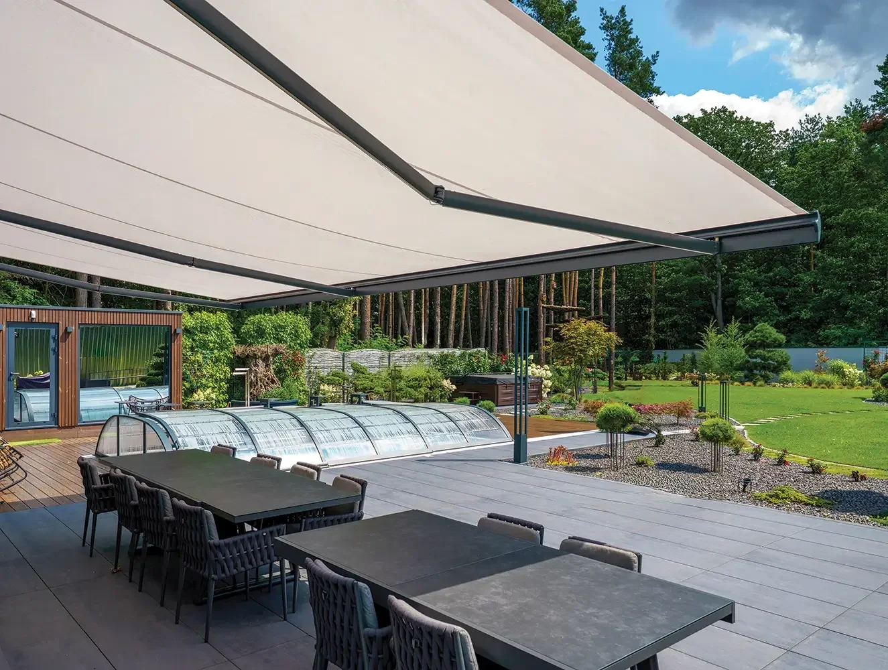 public/images/markiser/palladio.webp | bildbank/selt-aluprof/palladio/palladio-stare_zukowice+copy.webp | https://aluprof.com/app/default/assets/products_images/palladio-stare_zukowice+copy.webp | 1325 × 1000 | Monterad över en terrass i dagsljus med skog i bakgrunden; den bredaste monterade Palladio-bilden (1325 px). Kassetten syns inte tydligt, men bilden visar ingen annan markistyp. |
| markiser-malmo | Selt Jamaica | 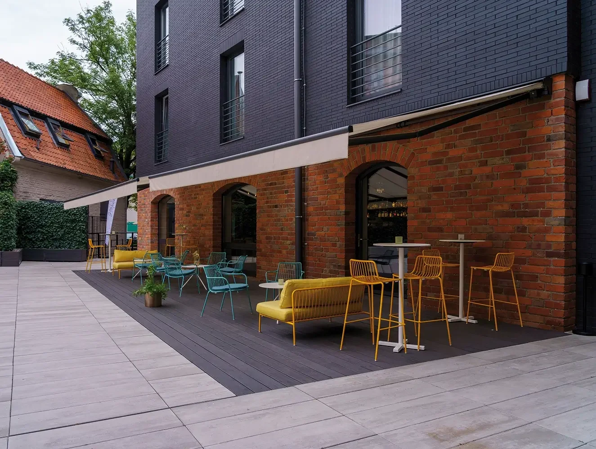 public/images/markiser/jamaica.webp | bildbank/selt-aluprof/jamaica/Restauracja-Toruń-2.webp | https://aluprof.com/app/default/assets/products_images/Restauracja-Toru%C5%84-2.webp | 1325 × 1000 | Den enda monterade Jamaica-bilden som är minst 1200 px bred, i dagsljus vid en tegelfasad. En liten vepa längst till vänster har text som inte går att läsa. |
| markiser-malmo | Harol Cadiz (omval) | 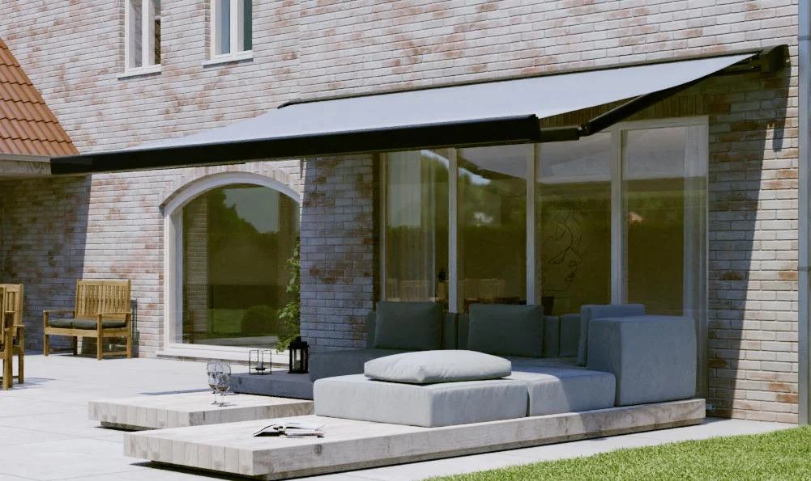 public/images/markiser/cadiz.webp | bildbank/harol/cadiz/Cadiz-1-1.jpg | https://www.harol.com/content/uploads/2023/08/Cadiz-1-1.jpg | 1001 × 595 | Monterad på en tegelvilla i dagsljus, närmare bild än Cadiz-1-1024x576 så att kassetten och armarna syns större. Cadiz_Variovolant är 999 px och klarar inte 1000 px. Ersätter AI-bilden. |
| markiser-malmo | Harol Tucan | 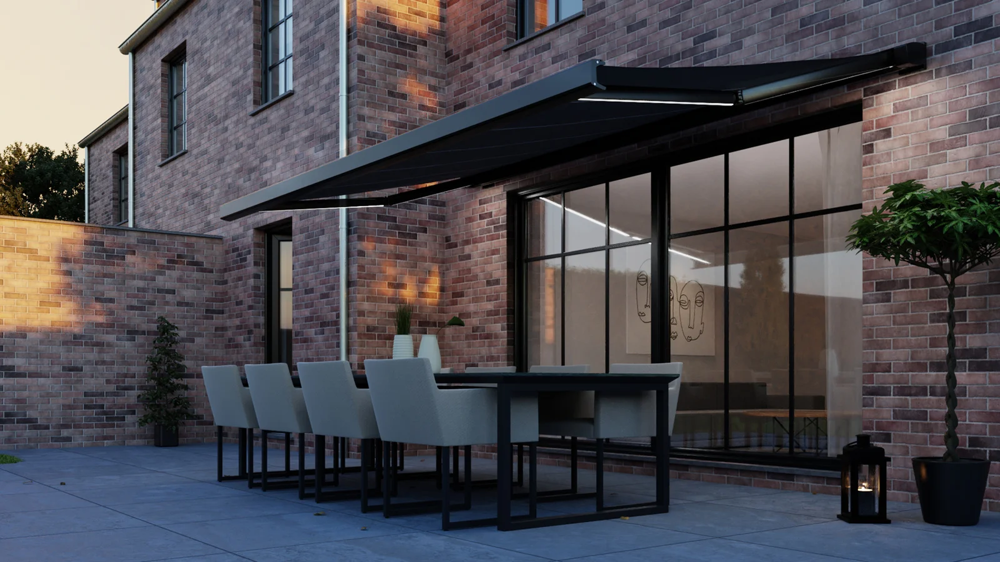 public/images/markiser/tucan.webp | bildbank/harol/tucan/Tucan-7.jpg | https://www.harol.com/content/uploads/2023/08/Tucan-7.jpg | 2000 × 1125 | Den enda Tucan-bilden som är minst 1200 px bred (2000 px), monterad över en terrass. Kvällsljus, för det finns ingen bild i dagsljus som är tillräckligt bred. |
| pergola-malmo | Harol Brera (omval) | 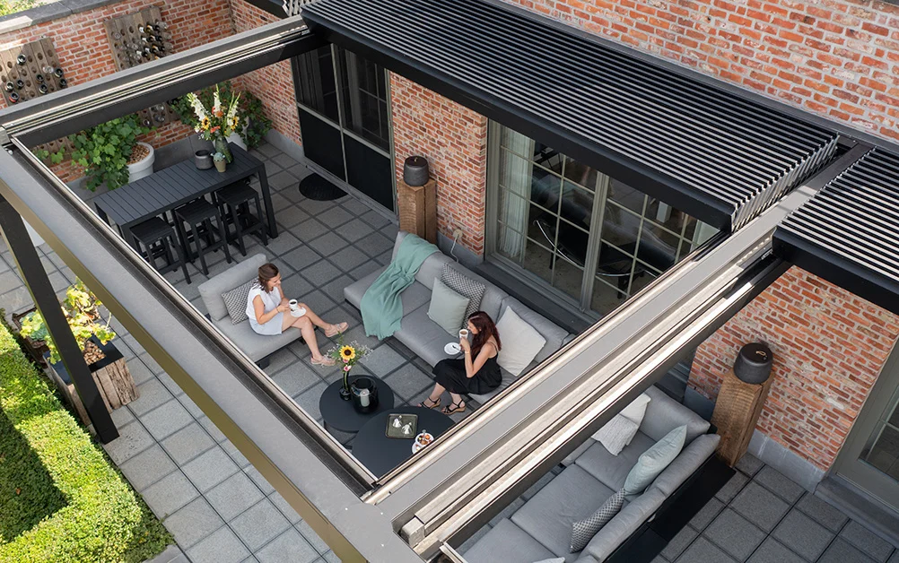 public/images/pergola/brera.webp | bildbank/harol/brera/Brera_HAROL2.jpg | https://www.harol.com/content/uploads/2024/02/Brera_HAROL2.jpg | 1002 × 628 | Väggmonterad mot en tegelfasad i dagsljus, med lamellerna delvis skjutna åt sidan, vilket är det som skiljer Brera från Opera. Brera_Black-13 är 667 px. |
| pergola-malmo | Harol Opera (omval) | 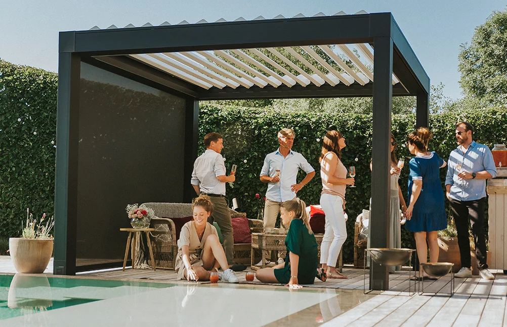 public/images/pergola/opera.webp | bildbank/harol/opera/Opera_Harol.jpg | https://www.harol.com/content/uploads/2024/02/Opera_Harol.jpg | 1002 × 648 | Hela pergolan syns, i dagsljus framför en häck. Opera_HR-12-1 har havsutsikt och ett teleskop, och Opera-2-1 visar bara en del av taket. |
| pergola-malmo | Harol Nomo (omval) | 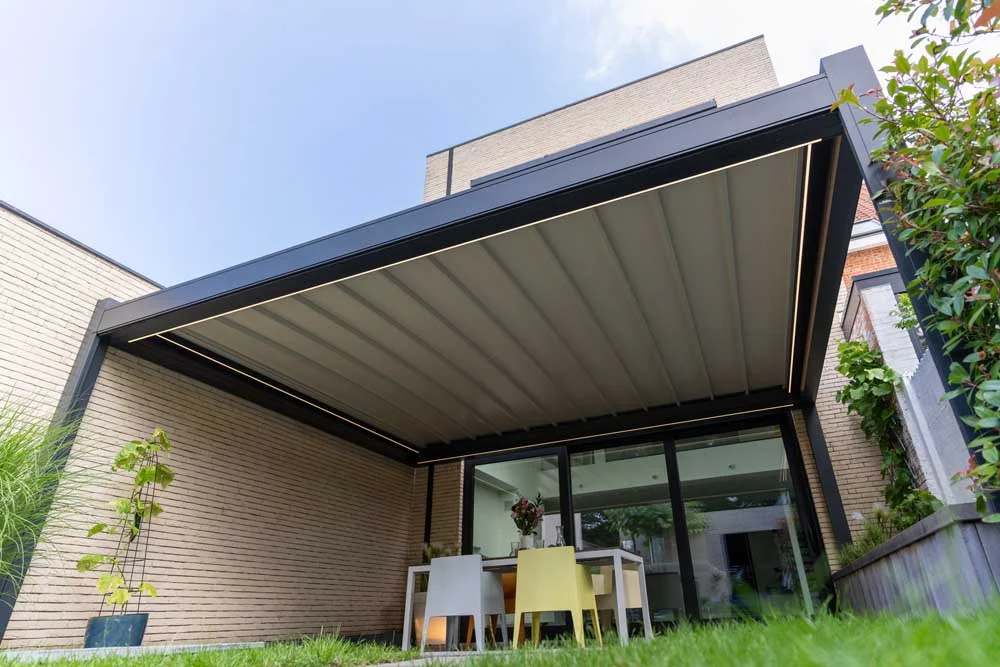 public/images/pergola/nomo.webp | bildbank/harol/nomo/Nomo-2.jpg | https://www.harol.com/content/uploads/2024/02/Nomo-2.jpg | 1000 × 667 | Den enda Nomo-bilden som är minst 1000 px, väggmonterad i dagsljus. Nomo-1 är 905 px och Hasselt-bilden 667 px. |
| pergola-malmo | Harol Versuz (omval) | 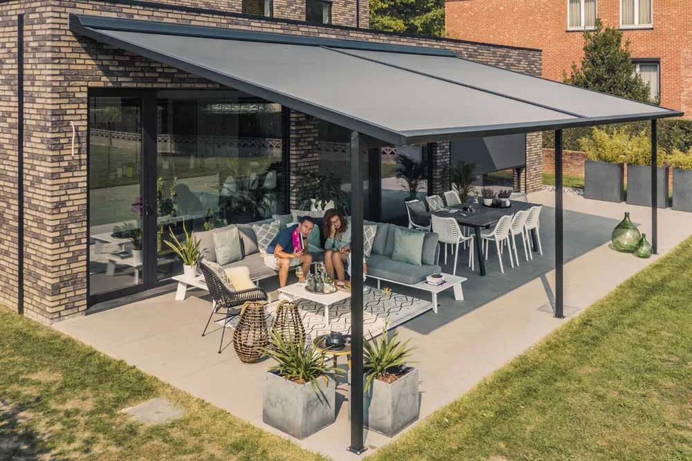 public/images/pergola/versuz.webp | bildbank/harol/versuz/Versuz-7.jpg | https://www.harol.com/content/uploads/2024/02/Versuz-7.jpg | 1000 × 667 | Visar tydligt det lutande taket, som skiljer Versuz från Linea, monterad mot en tegelfasad i dagsljus. Versuz-14 har suddiga blommor i förgrunden. |
| zip-screen-malmo | Harol Coolscreen (omval) | 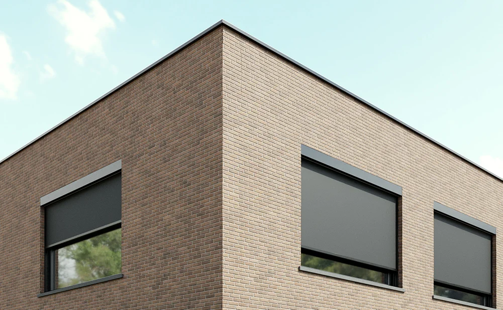 public/images/zip-screen/coolscreen.webp | bildbank/harol/coolscreen-8/Harol-Coolscreen-8.jpg | https://www.harol.com/content/uploads/2024/02/Harol-Coolscreen-8.jpg | 1001 × 618 | Den enda monterade Coolscreen-bilden som är minst 1000 px, tre screens på en tegelfasad i dagsljus. |
| zip-screen-malmo | Selt R 120 ZiiiP (omval) | 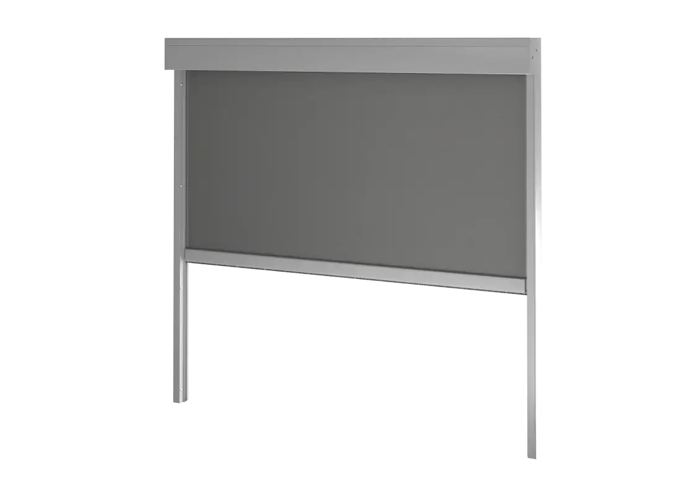 public/images/zip-screen/r-120-ziiip.webp | bildbank/selt-aluprof/r-120-ziiip/Refleksol-ZiiiP-120-Niestandardowy-.webp | https://aluprof.com/app/default/assets/images/Refleksol-ZiiiP-120-Niestandardowy-.webp | 1131 × 800 | Frilagd. Ingen monterad R 120-bild är minst 1000 px (högst 860 px), och detta är den enda bilden som klarar breddkravet. Bilden har genomskinlig bakgrund. |
| fonstermarkiser-malmo | Selt Italia Box | 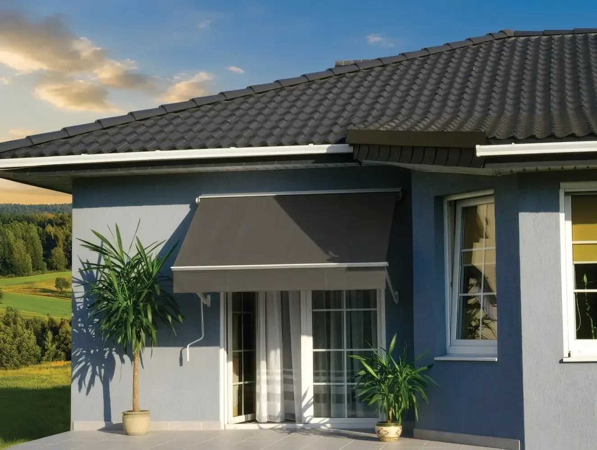 public/images/fonstermarkiser/italia-box.webp | bildbank/selt-aluprof/italia-box/2006-06_Italia_Kasetowa_Dom_Opole_05+-+RETUSZ.webp | https://aluprof.com/app/default/assets/products_images/2006-06_Italia_Kasetowa_Dom_Opole_05+-+RETUSZ.webp | 1325 × 1000 | Den enda monterade Italia Box-bilden som är minst 1200 px bred, med kassetten synlig över en altandörr. Det står krukväxter av palmtyp vid huset, men det finns inget alternativ. |
| fonstermarkiser-malmo | Fönstermiljö Sofiero | 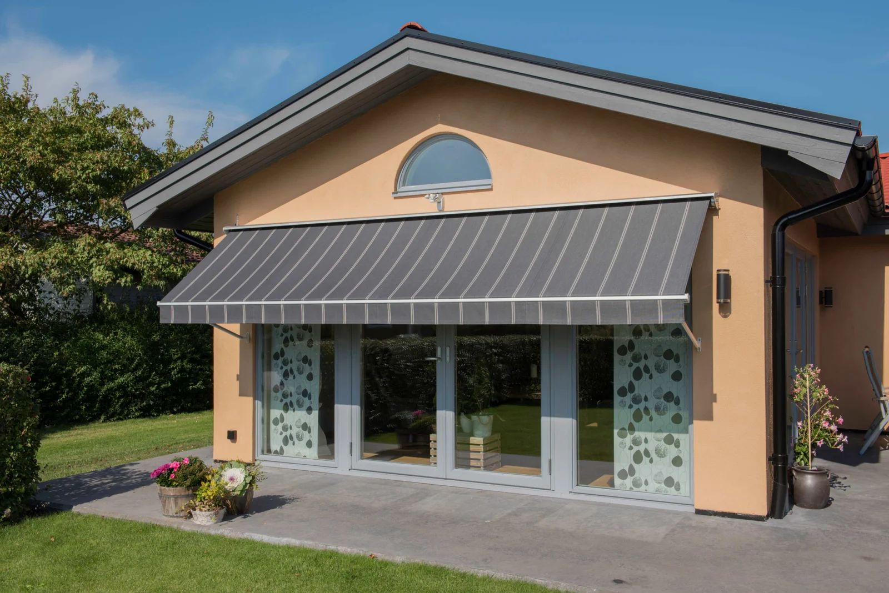 public/images/fonstermarkiser/sofiero.webp | bildbank/fonstermiljo/sofiero/DSC5998-2048x1367.jpg | https://fonstermiljo.se/wp-content/uploads/2026/03/DSC5998-2048x1367.jpg | 2048 × 1367 | Monterad på en svensk villa i dagsljus, utan blommor i förgrunden (till skillnad från DSC6000). DSC6069 är tagen inifrån. |
| fonstermarkiser-malmo | Fönstermiljö Solliden | 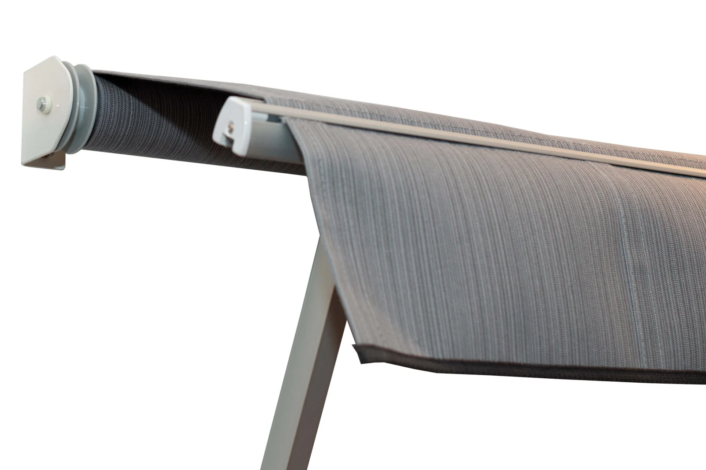 public/images/fonstermarkiser/solliden.webp | bildbank/fonstermiljo/solliden/solliden1-2048x1365.jpg | https://fonstermiljo.se/wp-content/uploads/2025/05/solliden1-2048x1365.jpg | 2048 × 1365 | Frilagd närbild som visar öppen vals utan kassett, vilket stämmer med Solliden. De monterade bilderna är bara 709 px breda. |
| Sida | Modell | Varför |
|---|---|---|
| markiser-malmo | Selt Palladio, hero | Den bredaste monterade Palladio-bilden är 1325 px, och hero kräver 1600 px. Platshållaren står kvar. |
| zip-screen-malmo | Selt R 95 ZiiiP | Inte med i omvalet. Den enda bilden är 860 px och visar kassetten i genomskärning. Nuvarande bild står kvar. |
| zip-screen-malmo | Hero | Rördes inte enligt instruktionen. Den ser AI-genererad ut och visar en rund kassett, medan R 120 ZiiiP har fyrkantig kassett. Ingen monterad zip-bild i bildbanken är minst 1600 px. |
| fonstermarkiser-malmo | Selt Italia | Båda bilderna är 860 px. Den monterade bilden har dessutom text på väven ("Pauze") och en trafikskylt. |
| fonstermarkiser-malmo | Haga, Läckö, Italia Balcony | Står i listan Övriga fönstermarkiser, som saknar bildplats. |
| insektsskydd-malmo | MTH-produkterna | Ingen ändring, enligt instruktionen. Typkorten har ingen bildplats. PNG-bilderna från MTH är menyikoner med text, och Kök-1.jpg visar inte tydligt nätet. |
| pergola-malmo | Harol Versuz Linea, 3.jpg | Fick inte användas för Versuz. Linea är horisontell, Versuz lutar. |